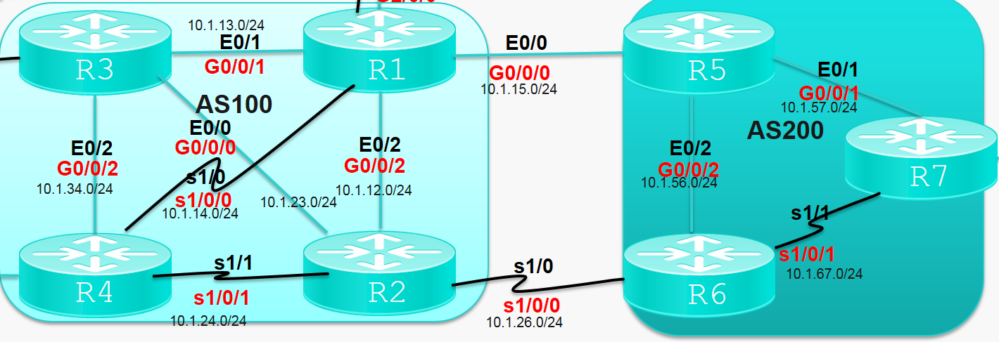
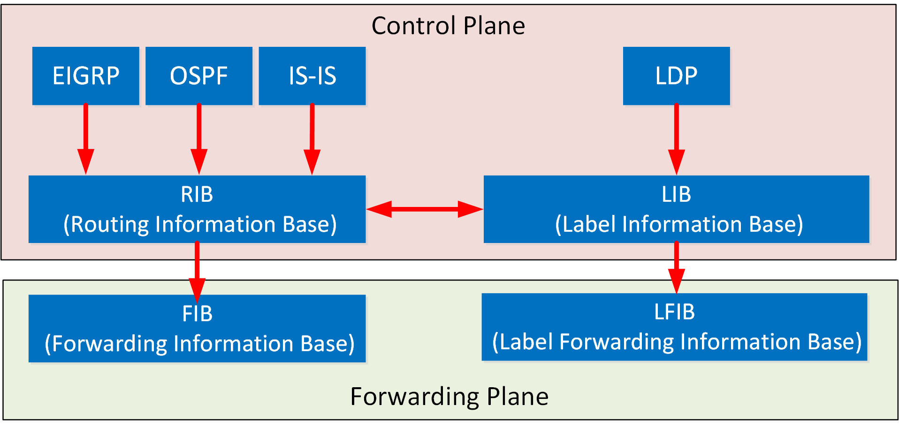

CCIE
Table of Contents
1 SDN-Access(first)
CTS，Cisco Trust SEC
SGT, Security Group Tag
ISE - authentication, authorization
ISE <-> AD
ISE <-> DNAC, by PxGrid
- 预共享密钥不能用cisco, admin
- PxGrid自动审核
- DNAC的名字不能有空格
1.1 Design
- Network hierarchy
- Network settings
- Network, DNS,AAA,NTP,Syslog等服务器
- Device Credentials, CLI, SNMPV2CRead&Write, HTTPs Read&Write
- IP Address Pools
- underlay
- overlay
- 在左边站点site处保留地址
- total: underlay, vn1, vn2, l2 handoff, l3 handoff
- 选中圆圈保存
- underlay
- Network, DNS,AAA,NTP,Syslog等服务器
1.2 Policy
- Group-base ACL
- Scability group -> ISE->Work Centers -> TrustSec 定义标签, SGT扩展组标签(数字)
- Group-base ACL policy,托拽source group,destination group
- Virtual Network, overlay,创建并托拽Scability group至VN
- Scability group -> ISE->Work Centers -> TrustSec 定义标签, SGT扩展组标签(数字)
1.3 需手动配置的设备
Fusion - border和DNAC等之间通信的传统设备
Border设备 - 半自动，vtp transparent, 路由通告给外部L3, 开启ISIS，配置与DNAC通信的接口地址
1.4 发现设备
主页 find new device, 用ip range
1.5 ISE
administration -> idenitfiy management -> 创建login和enable密码，替换管理设备的login local
1.6 Provision 发现与部署
1.6.1 border provision
- provision -> devices -> inventory -> action -> assign to site
- provision -> devices -> inventory -> action -> provision -> deploy，结束后ISE在admin->network resources->network device里看到此设备,同时在被管理设备(border)看到下发的配置
1.6.2 underlay provision
推荐用ISIS
- provision -> devices -> inventory -> LAN Automation
- 此时EDGE设备，必须处于对话状态，“请问需要初始化配置”
- complete后，edge会enable vlan1 ip address及配ISIS
- 点stop, ISIS邻居关系会从vlan1到no switchport变成L3接口， edge进入invertory
- devices -> inventory -> action -> assign -> Provision -> deploy, 结束后ISE在admin->network resources->network device里看到此设备,同时在被管理设备(border)看到下发的配置
1.6.3 fabric
- fabrics
创建fabric
- transits 多个VN之间的通信
- 两个SD-Access Fabric通信用SD-Access类型
- SD-Access和传统IP选IP类型,只有BGP协议可选<–只有BGP可承载VRF，选对面的as号
- 两个SD-Access Fabric通信用SD-Access类型
- 将设备分配至fabric
- edge -> add to fabric
- border,进出fabriic的数据流量的入口和出口-> CP + border
- rest of company, 只在内部使用，内部路由, 将内部ip导出
- outside world, 外部未知网络的路由, 不导入未知路由,所有的edge未知目的都会发至external border
- anywhere, 既可做内部路由，也可做外部路由
选类型，transits类型，VN个数，出口，保存，deploy
结束生成BGP，对端的GW根据border自动生成的BGP配置configure自已的ip address
- edge -> add to fabric
- host onboarding
Provision->Fabric->host onboarding
选择认证模板->save->deploy
VN关连地址池(SG是可选)
Assign edge port(select port assignment),关连VN和Group，认证类型->save->deploy
anycast gw
- edge配置vlan里的ip address
overlay分为L2和L3，命令里用service ipv4和service ethernet
edge用户访问外网,丢给anycast gw,到border再去向外网
control-plane based on LISP
data-plane based on VXLAN->为了支持L2 ARP
VXLAN里包含了SGT和VNI(lisp instance)
不同VN间通信用ip transit,如果是l3报文出到对面，再回来，类似单臂路由
- edge配置vlan里的ip address
- Qos
Policy -> Application
应用级,cisco validated design-> 业务相关(高优先低延时)、默认、业务无关(低优先高延时)
- Application sets 应用集
- Application 详细的每条class
- Queueing Profile 具体的策略
- Application policies Qos部署下发
- Application sets 应用集
- 扩展结点
pnp，trunk连接,配edge的接口时指定extended node, 需要在默认的INFRA_VN里分配地址池
- Server结点
trunk连接
1.6.4 镜像管理
DESIGN->Image Repository
1.7 Assurance
1.8 802.1X
EAPOL,EAP TLS, EAP fast, PEAP
MAC认证旁路 - 静态mac认证，用于不支持802.1x的设备
ISE -> policy -> policy elements -> results -> MS-CHAP2等认证
ISE -> policy -> policy sets -> authen policy -> 类似ACL的匹配策略
Provision -> Fabric -> endpoint -> closed authentication
edge -> show access-session interface * detail验证
2 BGP
EBGP AS号码不同
IBGP AS号码相同,因为实现对AS内部路由传递的操控，内部的设备要外部的路由，内部由BGP协议去承载大量路由
TCP - 179, TLV类型
BGP - 单播
AS by AS
2.1 基本概念
- 邻居关系
BGP/2021-08-12_08-08-02_bgp_neighbor.pcapng 断链重建，ping
BGP会通告的路由必须是在路由表里存在的路由
BGP redistribute的route-map不存在则默认permit
- 防环
同一个AS在一个通告路由中不能超过N(默认是1)次 - 报文
- open - 建立邻居关系
- keepalive - 保活
- update - 更新路由
- notification
routerefresh - clear ip bgp * soft in 触发，让对方发送路由信息
- open - 建立邻居关系
状态机
IDLE 空 Connect tcping Active tcp失败 Opensent 发open packet Openconfirm 收open packet and OK Establish Done 路由下发


- 使用Loopback做更新源
- 配置静态路由使得loopback可达
- neighbor 6.6.6.6 update-source Loopback 1
- set ttl - neighbor 2.2.2.2 ebgp-multihop 2
- 如果不能用3,可用neighbor 6.6.6.6 disable-connected-check，不检查直连发到本机loopback的TTL
- 配置静态路由使得loopback可达
- BGP load balance
BGP在本路由器可能会将多条同一个目的路由放入全局路由表中，但通告给别人时只给最优的一条路由，同时路由为精准路由 - 通告
从EBGP收到的路由更新给EBGP和IBGP邻居
从IBGP收到的路由不更新给IBGP邻居 -> 防环
iBGP很多时候使用环回接口作为更新源，所以iBGP邻居需要IGP的支撑 - IBGP路由不可达
EBPG路由在更新给IBGP的时候默认会保持原有的下一跳,下一跳可达是BGP最优路由的基本条件
R4收到ibgp路由，同时此ibgp路由从EBGP更新而来，则下一跳为EBGP对面as的路由地址
R4#show ip bgp
BGP table version is 3, local router ID is 44.1.1.1
Status codes: s suppressed, d damped, h history, * valid, > best, i - internal,
r RIB-failure, S Stale, m multipath, b backup-path, f RT-Filter,
x best-external, a additional-path, c RIB-compressed,
Origin codes: i - IGP, e - EGP, ? - incomplete
RPKI validation codes: V valid, I invalid, N Not found
Network Next Hop Metric LocPrf Weight Path
*>i 1.1.1.1/32 11.1.1.1 0 100 0 i
*> 4.4.4.4/32 0.0.0.0 0 32768 i
* i 5.5.5.5/32 10.1.15.5 0 100 0 200 i
* i 7.7.7.7/32 10.1.15.5 0 100 0 200 i
ASBR对IBGP邻居使用 neighbor 77.1.1.1 next-hop-self 可使得BGP next-hop为ASBR的地址
7.7.7.7不能ping4.4.4.4，因为R3没有4.4.4.4的路由，IP转发是逐跳查找路由，没有BGP的R3，不知道如果转发4.4.4.4
BGP路由黑洞(某些设备没有运行BGP，导致该设备无法通过BGP得到路由)
- 路由redistribute
默认情况只能把EBGP路由引入IGP，不能把IBGP路由引进来，基于防环 - 不再使用 的路由同步 - 从IBGP对等体获得的路由信息不会通告给EBGP邻居，除非该路由也可以从IGP中获得
命令是no sync - 路由通告
只能通告路由表里存在的路由
?表示路由从其他路由协议而来(引入)，i表示路由从BGP来
只通告最优路由给BGP对等体
iBGP一定依赖IGP - next hop
IBGP 更新源地址为下一跳
EBGP 下一跳为EBGP邻居关系地址
多点接入NH - 类似FA,会优化为同网段的最短路径 - 对等体组和动态邻居
简化配置
- peer-group neighbor XL peer-group neighbor XL remote-as 100 neighbor XL update-source Loopback0 neighbor XL next-hop-self neighbor 11.1.1.1 peer-group XL neighbor 33.1.1.1 peer-group XL neighbor 44.1.1.1 peer-group XL - bgp listen range, 如下所有和本路由建邻居关系都会应用peer-group bgp listen range 0.0.0.0/0 peer-group XL
- 连接模式neighbor 22.1.1.1 transport connection-mode
- AS欺骗 neighbor 10.1.15.5 local-as 65535
- 移除私有AS
私有AS 64512-65534
公有路由不能存在私有AS，所以从内网过来的AS path里包含的私有AS要被移除
- 移除 neighbor 10.1.1.1 remove-private-as all -> 通告给公网的路由path中私有AS被移除
- 替换 neighbor 10.1.1.1 remove-private-as all replace-as -> 通告给公网的路由path中私有AS被替换为本地AS
- 移除 neighbor 10.1.1.1 remove-private-as all -> 通告给公网的路由path中私有AS被移除
2.2 路由聚合
- 自动聚合: ?的BGP路由,结果汇总为主类网络,命令为auto-summary -> 几乎没有人用
R1(config-router)#do show ip bgp
BGP table version is 33, local router ID is 11.1.1.1
Status codes: s suppressed, d damped, h history, * valid, > best, i - internal,
r RIB-failure, S Stale, m multipath, b backup-path, f RT-Filter,
x best-external, a additional-path, c RIB-compressed,
Origin codes: i - IGP, e - EGP, ? - incomplete
RPKI validation codes: V valid, I invalid, N Not found
Network Next Hop Metric LocPrf Weight Path
*> 1.1.1.1/32 0.0.0.0 0 32768 i
*> 1.1.1.2/32 0.0.0.0 0 32768 ?
*> 1.1.1.3/32 0.0.0.0 0 32768 ?
*> 1.1.1.4/32 0.0.0.0 0 32768 ?
*>i 2.2.2.2/32 22.1.1.1 0 100 0 i
*>i 4.4.4.4/32 44.1.1.1 0 100 0 i
*> 5.5.5.5/32 10.1.15.5 0 0 65535 200 i
*> 7.7.7.7/32 10.1.15.5 0 65535 200 i
*> 10.1.12.0/24 0.0.0.0 0 32768 ?
*> 10.1.13.0/24 0.0.0.0 0 32768 ?
*> 10.1.14.0/24 0.0.0.0 0 32768 ?
*> 10.1.15.0/24 0.0.0.0 0 32768 ?
*> 11.1.1.1/32 0.0.0.0 0 32768 ?
*> 77.1.1.1/32 10.1.15.5 0 65535 200 i
R1(config-router)#auto-summary
R1(config-router)#do show ip bgp
BGP table version is 44, local router ID is 11.1.1.1
Status codes: s suppressed, d damped, h history, * valid, > best, i - internal,
r RIB-failure, S Stale, m multipath, b backup-path, f RT-Filter,
x best-external, a additional-path, c RIB-compressed,
Origin codes: i - IGP, e - EGP, ? - incomplete
RPKI validation codes: V valid, I invalid, N Not found
Network Next Hop Metric LocPrf Weight Path
*> 1.0.0.0 0.0.0.0 0 32768 ?
*> 1.1.1.1/32 0.0.0.0 0 32768 i
*>i 2.2.2.2/32 22.1.1.1 0 100 0 i
*>i 4.4.4.4/32 44.1.1.1 0 100 0 i
*> 5.5.5.5/32 10.1.15.5 0 0 65535 200 i
*> 7.7.7.7/32 10.1.15.5 0 65535 200 i
*> 10.0.0.0 0.0.0.0 0 32768 ?
*> 11.0.0.0 0.0.0.0 0 32768 ?
*> 77.1.1.1/32 10.1.15.5 0 65535 200 i
- 汇总静态路由 ip route 1.1.1.0 255.255.255.252 Null0 -> 此命令同时可做 路由清洗
- 汇总BGP本地路由
aggregate-address 1.1.1.0 255.255.255.252
aggregate-address 1.1.1.0 255.255.255.252 summary-only //只通告汇总路由
aggregate-address 1.1.1.0 255.255.255.252 suppress-map xxx //抑制xxx命中的路由 - 原子聚合 - 聚合的过程丢失了一些路径信息
聚合者 - AS number + router-id - AS-SET
保留被聚合路由的原有AS - 修改聚合属性
R1(config)#route-map ORIGIN R1(config-route-map)#set origin incomplete R1(config-route-map)#exit R1(config)#router bgp 100 R1(config-router)#aggregate-address 1.1.1.0 255.255.255.252 summary-only attribute-map ORIGIN R1(config-router)#$.1.0 255.255.255.252 summary-only attribute-map ORIGIN
2.3 路由反射
一种更新iBGP路由的机制，对比全连接更简单
- 角色
RR 客户端 非客户端
- 原则
- 非客户机IBGP对等体学到的路由，发布给此RR的所有客户机
2 从客户端学到的路由，发布给RR的所有非客户端和客户端(包含该客户端) <= 我觉得应该是版本实现可能不一样
- 命令
neighbor 33.1.1.1 route-reflector-client //在配好邻居的基础上，指定任意client即变成RR neighbor 44.1.1.1 shutdown //强制关闭邻居
- cluster
- 一个cluster可以包括一个或多少RR
- 一个client可以同时属于多少cluster
- Originator_ID用于防环，由RR产生，携带本地AS内部路由发起者的Router ID(注意， Originator_ID和ORIGIN不是一个东西)
- Cluster_List用于RR防环，如果Cluster_List中已经本地Cluster_ID，丢弃该路由，否则将其加入Cluster_List，并反射(客户端也可配cluster，如果一致也会丢弃)
BGP/2021-08-18_20-58-30_originator_id.pcapng
- 联邦(不常用)
分而治之，缺点是要取消之前的bgp配置，联邦内inherit AS的属性: 下一跳、MED值、本地优先级
bgp confederation identifier 200 bgp confederation peers 2067
- 团体属性
应用方式: 更新邻居，收邻居路由，产生路由
有过滤属性的well-known团体属性
NO-EXPORT(不更新出eBGP邻居)
Local-AS/No-export-subconfed(不更新出本地AS或者 子联邦AS )
No-advertise(不更新)
route-map Comm permit 10 set community no-export set community 100:3 //自定义属性 network 1.1.1.1 mask 255.255.255.255 route-map Comm neighbor 33.1.1.1 send-community //默认不发送团体属性 ip community-list xx //和prefix list或access list类似
2.4 路由选择
| 公认必遵 | AS-path, next-hop, origin |
| 公认任意 | local preference(ibgp) |
| 可选过渡 | 团体属性 |
| 可选非进渡 | 起源ID，MED, Cluster |
| 其他 | weight，不在报文中体现 |
优先级
| Weight(大优先) |
| Local_Pref(大优先) |
| 同一条本地路由 手动聚合->自动聚合->network引入->import-route |
| AS-path 最短 |
| Origin IGP -> EGP -> Incomplete |
| 来自同一AS的路由，MED最低 |
| EBGP->IBGP->local cross->remote cross |
| load balance |
| O 时间更新的EBGP |
| R RID/起源id |
| cluster id |
前提
下一跳可达
- weight 本地，本地路由默认32768，在route-map里配
- local perference, local as内传递, 用于ASBR引导流量到内部设备然后去往其他AS， 在route-map里配ebgp邻居的route-map in
- 本地生成的路由
- as-path
- MED
a. 缺省为0，如果通告IGP，则继承IGP的cost作为MED
b. 越小越优先
c. 相邻两个AS之间传递
d. 影响从相邻AS到本AS
e. 只有第一个as号相同时才比MED
f. 来自IBGP的路由MED只在AS内传，即不是ASBR的路由产生network设定metric只在内部
g. 配置时一般在ASBR上配出方向的route-map - next hop metric 越小越优先
- 开启loadbalance,结果看路由表
show ip protocols | s bgp //显示 R7(config-router)#maximum-paths 6 //最大load balance路径
- as过滤
ip as-path access-list 1 //as-path过滤,正则表达式 neighbor 10.1.15.1 filter-list 1 out //应用filter
2.5 其他特性
2.5.1 认证
2.5.2 默认路由
- network 0.0.0.0
- neighbor 11.1.1.1 default-originate
2.5.3 MP-BGP
router bgp 100
bgp log-neighbor-changes
neighbor 10.1.15.5 remote-as 200
neighbor 10.1.15.5 local-as 65535
neighbor 10.1.15.5 password cisco
neighbor 22.1.1.1 remote-as 100
neighbor 22.1.1.1 update-source Loopback0
neighbor 2015::5 remote-as 200
neighbor 33.1.1.1 remote-as 100
neighbor 33.1.1.1 update-source Loopback0
neighbor 44.1.1.1 remote-as 100
neighbor 44.1.1.1 update-source Loopback0
!
address-family ipv4
network 1.1.1.1 mask 255.255.255.255 route-map 1
network 44.1.1.1 mask 255.255.255.255
neighbor 10.1.15.5 activate
neighbor 22.1.1.1 activate
neighbor 22.1.1.1 next-hop-self
no neighbor 2015::5 activate
neighbor 33.1.1.1 activate
neighbor 33.1.1.1 send-community
neighbor 33.1.1.1 route-reflector-client
neighbor 33.1.1.1 next-hop-self
neighbor 44.1.1.1 activate
neighbor 44.1.1.1 route-reflector-client
neighbor 44.1.1.1 next-hop-self
exit-address-family
!
address-family ipv6
network 1::/64
neighbor 2015::5 activate
exit-address-family
R1#show bgp ipv6 unicast summary
BGP router identifier 11.1.1.1, local AS number 100
BGP table version is 2, main routing table version 2
1 network entries using 164 bytes of memory
1 path entries using 104 bytes of memory
1/1 BGP path/bestpath attribute entries using 144 bytes of memory
2 BGP rrinfo entries using 48 bytes of memory
2 BGP AS-PATH entries using 48 bytes of memory
0 BGP route-map cache entries using 0 bytes of memory
0 BGP filter-list cache entries using 0 bytes of memory
BGP using 508 total bytes of memory
BGP activity 180/170 prefixes, 262/248 paths, scan interval 60 secs
Neighbor V AS MsgRcvd MsgSent TblVer InQ OutQ Up/Down State/PfxRcd
2015::5 4 200 4 5 2 0 0 00:00:50 0
R1#
R1#show bgp ipv6 unicast
BGP table version is 2, local router ID is 11.1.1.1
Status codes: s suppressed, d damped, h history, * valid, > best, i - internal,
r RIB-failure, S Stale, m multipath, b backup-path, f RT-Filter,
x best-external, a additional-path, c RIB-compressed,
Origin codes: i - IGP, e - EGP, ? - incomplete
RPKI validation codes: V valid, I invalid, N Not found
Network Next Hop Metric LocPrf Weight Path
*> 1::/64 :: 0 32768 i
2.6 其他命令
set weight //set weigth set local-preference //set local-preference set as-path prepend //route-map里append一个as number
3 IGP - OSPF
IGP_-_OSPF/2021-09-04_09-20-02_ospf.pcapng
- network wildard指定的是接口地址范围，在里面的interface都被发布出去
- 虚连接作用
在连接虚连接的同一个area0的ABR间建virtual link
- 连接不直接area0的area
- 连接多个area0
- backup
- 连接不直接area0的area
- 不同ospf不兼容
- 同一个area传递链路信息，不同area传递路由信息
- 必须有area0,其他area只和area0通信
- OSPF使能网段时会将接口上匹配该网段的所有网段路由与主机路由都通过LSA发布，但有些时候主机路由或网段路由是不希望被发布的。通过前缀抑制配置，可以减少LSA中携带不需要的前缀，即不发布某些网段路由和主机路由，从而提高网络安全性，加快路由收敛。
当使能前缀抑制时，具体情况如下：
- P2P或P2MP类型网络：Type-1 LSA中不发布接口的主地址，即Type-1 LSA中链路类型为3的Stub链路被抑制，不生成接口路由，但其他路由信息可以正常计算，不会影响流量转发。
- 广播类型或者NBMA网络：DR发布的Type-2 LSA的掩码字段会填成32位，即不生成网段路由，但其他路由信息可以正常计算，不会影响流量转发。另外，如果没有邻居，发布的Type-1 LSA中也不发布接口的主地址，即Type-1 LSA中链路类型为3的Stub链路被抑制。
3.1 LSA
- LS type
| Type | Description | Link State ID |
|---|---|---|
| 1 | Router-LSA, 描述路由器端口链路,同一个area通告 | 生成LSA路由器的Router-ID |
| 2 | Network-LSA, DR生成该网络上所连接路由的列表, 同一个area通告 | DR端口ip |
| 3 | Network-Summary-LSA, ABR产生，到外部某一网段的路由信息，本area向其他area通告 | 目的网段地址 |
| 4 | ASBR-Summary-LSA, ABR产生，为5生成，在非ASBR内通告 | ASBR的Router-ID |
| 5 | AS-external-LSA, ASBR产生，外部某一网段的路由信息，在整个AS内通告 | 目的网段地址 |
1和2计算路由
- Link State ID
- Advertising Router
- LS sequence number
标识更新的LSA - Hello报文校验
Network mask掩码要一样
HelloIntervel一致
Options匹配
DeadInterval一样 - 状态机
down(attempt)->init->two-way->exstart->exchange->loading->full
Router-LSA中重要字段
| Type | Link ID | Data |
|---|---|---|
| PPP | 邻居的RouterID | 该网段本地接口的IP |
| TransNet | DR的接口IP地址 | 该网段本地接口的IP |
| StubNet | 该Stub网段的IP网络地址 | 该Stub网段的网络掩码 |
| Virtual | 虚连邻居的RouterID | 去该虚连邻居的本地IP地址 |
3.2 路由汇总
当前想汇总area的ABR
- 明细存在，汇总存在
- 所有明细消失，汇总才消失
3.3 ASBR
type 1, ospf as计算开销
type 2, ospf as内不增加开销
forwarding address防止次优路径 - 如果引入外部路由时下一跳为area0内部，则设置forwarding adress直接为下一跳地址
3.4 Stub区域
不接受4 5类LSA, ABR产生默认路由，为了减少性能差的路由器上的资源占用
- 完全Stub, 不接受3, 4, 5
3.5 NSSA
类型7，适用于不想引入3,4,5但想引入处部路由的场景
NSSA路由传入正常area时，会将7转5，同时保留7的forwarding addr，用于正常area计算cost
3.6 额外特性
- 通告stub路由器，可使更少的流量经过stub路由器
- ASBR通告默认路由，常用于连接互联网的边界设备，配置后ASBR向AS域内通告默认路由(5类)
4 MPLS - VPN
LDP - 分发标签(为IGP)
RSVP - MPLS 流量工程
MP-BGP - 分发标签(为BGP单播路由)
| 控制平面 | 转发平面 |
|---|---|
| 路由协议，标签分发协议、RIB, LIB | FIB, LFIB |
- ldp配置
MPLS_-_VPN/2021-08-29_16-54-58_ldp.pcapng
ip cef (config-if) mpls ip
- 帧格式
Label(20bits), TC: Traffic Class (QoS and ECN)(3bits), S: Bottom-of-Stack(1bit), TTL: Time-to-Liv(8bits)
0-15: 特殊标签
16-1023: 静态LSP和静态CR-LSP
1024以上: LDP、RSVP-TE、MP-BGP
MPLS_-_VPN/2021-08-29_18-27-49_ping_mpls.pcapng
- 改变地址
mpls ldp discovery transport-address interface
- 验证
mpls ldp neighbor 1.1.1.1 password xuan
- show mpls ip binding
in use为ip路由表里生效的路由对应生成的mpls label
路由的loadbalance会使得mpls的loadbalance
- php次末跳出(默认开启)
为了不让最后一跳既pop标签又查fib，在倒数第二跳节点将标签pop出，则最后一跳只需查fib
实现为设备会为自身的直连路由向上游设备分配隐式空标签
如要改为显式空,mpls ldp explicit-null
- 下一跳非直达路由(?)
MPLS_-_VPN/2021-08-31_08-51-15_1.1.1.1.pcapng
BGP doesn't advertise lable for internal routes unless you use BGP -LU family.
When we use LDP on Cisco IOS, we locally generate a label for each prefix that we can find in the RIB, except for BGP prefixes. This information is then added to the LIB (Label Information Base).

R4#show ip cef 11.1.1.1
11.1.1.1/32
nexthop 10.1.34.3 Ethernet0/2 label 307
R4#
R4#show ip cef 1.1.1.1
1.1.1.1/32
nexthop 10.1.34.3 Ethernet0/2 label 307
R4#
R4#show ip route
Codes: L - local, C - connected, S - static, R - RIP, M - mobile, B - BGP
D - EIGRP, EX - EIGRP external, O - OSPF, IA - OSPF inter area
N1 - OSPF NSSA external type 1, N2 - OSPF NSSA external type 2
E1 - OSPF external type 1, E2 - OSPF external type 2
i - IS-IS, su - IS-IS summary, L1 - IS-IS level-1, L2 - IS-IS level-2
ia - IS-IS inter area, * - candidate default, U - per-user static route
o - ODR, P - periodic downloaded static route, H - NHRP, l - LISP
a - application route
+ - replicated route, % - next hop override
Gateway of last resort is not set
1.0.0.0/32 is subnetted, 1 subnets
B 1.1.1.1 [200/0] via 11.1.1.1, 00:48:09
4.0.0.0/32 is subnetted, 1 subnets
C 4.4.4.4 is directly connected, Loopback1
10.0.0.0/8 is variably subnetted, 9 subnets, 2 masks
O 10.1.12.0/24 [110/30] via 10.1.34.3, 00:18:05, Ethernet0/2
O 10.1.13.0/24 [110/20] via 10.1.34.3, 00:18:05, Ethernet0/2
C 10.1.14.0/24 is directly connected, Serial1/0
L 10.1.14.4/32 is directly connected, Serial1/0
O 10.1.23.0/24 [110/20] via 10.1.34.3, 00:18:05, Ethernet0/2
C 10.1.24.0/24 is directly connected, Serial1/1
L 10.1.24.4/32 is directly connected, Serial1/1
C 10.1.34.0/24 is directly connected, Ethernet0/2
L 10.1.34.4/32 is directly connected, Ethernet0/2
11.0.0.0/32 is subnetted, 1 subnets
O 11.1.1.1 [110/21] via 10.1.34.3, 00:18:05, Ethernet0/2
22.0.0.0/32 is subnetted, 1 subnets
O 22.1.1.1 [110/21] via 10.1.34.3, 00:18:05, Ethernet0/2
33.0.0.0/32 is subnetted, 1 subnets
O 33.1.1.1 [110/11] via 10.1.34.3, 00:18:05, Ethernet0/2
44.0.0.0/8 is variably subnetted, 2 subnets, 2 masks
C 44.1.1.0/24 is directly connected, Loopback0
L 44.1.1.1/32 is directly connected, Loopback0
R4#
R4#show mpls ip bin
R4#show mpls ip binding
1.1.1.1/32
out label: imp-null lsr: 11.1.1.1:0
2.2.2.2/32
out label: imp-null lsr: 22.1.1.1:0
3.3.3.3/32
out label: imp-null lsr: 33.1.1.1:0
4.4.4.4/32
in label: imp-null
10.1.12.0/24
in label: 400
out label: 310 lsr: 33.1.1.1:0 inuse
out label: imp-null lsr: 11.1.1.1:0
out label: imp-null lsr: 22.1.1.1:0
10.1.13.0/24
in label: 401
out label: imp-null lsr: 33.1.1.1:0 inuse
out label: imp-null lsr: 11.1.1.1:0
out label: 200 lsr: 22.1.1.1:0
10.1.14.0/24
in label: imp-null
out label: 309 lsr: 33.1.1.1:0
out label: imp-null lsr: 11.1.1.1:0 inuse
out label: 201 lsr: 22.1.1.1:0
10.1.15.0/24
out label: imp-null lsr: 11.1.1.1:0
10.1.23.0/24
in label: 402
out label: imp-null lsr: 33.1.1.1:0 inuse
out label: 100 lsr: 11.1.1.1:0
out label: imp-null lsr: 22.1.1.1:0
10.1.24.0/24
in label: imp-null
out label: 308 lsr: 33.1.1.1:0
out label: 104 lsr: 11.1.1.1:0
out label: imp-null lsr: 22.1.1.1:0 inuse
10.1.34.0/24
in label: imp-null
out label: imp-null lsr: 33.1.1.1:0
out label: 102 lsr: 11.1.1.1:0
out label: 202 lsr: 22.1.1.1:0
11.1.1.1/32
in label: 403
out label: 307 lsr: 33.1.1.1:0 inuse
out label: imp-null lsr: 11.1.1.1:0
out label: 203 lsr: 22.1.1.1:0
22.1.1.1/32
in label: 404
out label: 306 lsr: 33.1.1.1:0 inuse
out label: 105 lsr: 11.1.1.1:0
out label: imp-null lsr: 22.1.1.1:0
33.1.1.1/32
in label: 405
out label: imp-null lsr: 33.1.1.1:0 inuse
out label: 103 lsr: 11.1.1.1:0
out label: 204 lsr: 22.1.1.1:0
44.1.1.0/24
in label: imp-null
44.1.1.1/32
out label: 311 lsr: 33.1.1.1:0
out label: 101 lsr: 11.1.1.1:0
out label: 205 lsr: 22.1.1.1:0
4.1 vrf
RD值建议全网per客户唯一 -> PE间同步路由以RD为前缀, 和RT一致时方便配置
interface Ethernet0/0
ip vrf forwarding xuan
ip address 10.1.49.4 255.255.255.0
!
R4#show ip route vrf xuan
Routing Table: xuan
Codes: L - local, C - connected, S - static, R - RIP, M - mobile, B - BGP
D - EIGRP, EX - EIGRP external, O - OSPF, IA - OSPF inter area
N1 - OSPF NSSA external type 1, N2 - OSPF NSSA external type 2
E1 - OSPF external type 1, E2 - OSPF external type 2
i - IS-IS, su - IS-IS summary, L1 - IS-IS level-1, L2 - IS-IS level-2
ia - IS-IS inter area, * - candidate default, U - per-user static route
o - ODR, P - periodic downloaded static route, H - NHRP, l - LISP
a - application route
+ - replicated route, % - next hop override
Gateway of last resort is not set
10.0.0.0/8 is variably subnetted, 2 subnets, 2 masks
C 10.1.49.0/24 is directly connected, Ethernet0/0
L 10.1.49.4/32 is directly connected, Ethernet0/0
- RD 和 BGP
私有路由通告时，RD值区分不同客户的相同私有地址，所有vrf路由进入vpnv4邻居
如果两个PE配置不同的rd值(RT相同)，那么每个PE会生成同一个路由的两个BGP VPNv4的RD路由
R4#show ip bgp vpnv4 all
BGP table version is 12, local router ID is 44.1.1.1
Status codes: s suppressed, d damped, h history, * valid, > best, i - internal,
r RIB-failure, S Stale, m multipath, b backup-path, f RT-Filter,
x best-external, a additional-path, c RIB-compressed,
Origin codes: i - IGP, e - EGP, ? - incomplete
RPKI validation codes: V valid, I invalid, N Not found
Network Next Hop Metric LocPrf Weight Path
Route Distinguisher: 1:1 (default for vrf xuan)
*>i 10.1.10.0/24 11.1.1.1 0 100 0 i
*> 10.1.49.0/24 0.0.0.0 0 32768 i
Route Distinguisher: 100:14
*>i 10.1.10.0/24 11.1.1.1 0 100 0 i
R4#
如下抓包，没有配RT时
MPLS_-_VPN/2021-08-31_21-08-47_no_rt.pcapng
- RT -> BGP扩展团体属性
控制收发VPNv4路由及把VPNv4路由放入vrf路由表
address-family vpnv4 neighbor 44.1.1.1 activate neighbor 44.1.1.1 send-community extended exit-address-family R4(config)#do show run | s vrf ip vrf xuan rd 100:14 route-target export 100:14 route-target export 1:1 route-target import 100:14 ip vrf forwarding xuan address-family ipv4 vrf xuan network 10.1.49.0 mask 255.255.255.0
MPLS_-_VPN/2021-08-31_21-17-05_rt_configured.pcapng
配了RT值后报文中会多Path Attribute - EXTENDED_COMMUNITIES的属性
- PE间的MP-BGP
全互联或者RR
4.2 PE和CE间
CE一般配IGP或者静态路由
PE将路由导入至BGP vrf，通过bgp vpn4通告给对端PE
PE的下一跳为BGP更新源，使用ldp分配的外层标签push，发至mpls next-hop
| 协议 | 分配的对象 | 标签的变化 | |
|---|---|---|---|
| 内层标签 | BGP自动分配 | VPNv4路由的标签 | 每个私网(vrf)路由都有自已的标签 |
| 外层标签 | LDP自动分配 | 到达VPNv4路由的下一跳的标签 | 多个私网(vrf)相同下一跳，则外层标签相同 |
MPLS_-_VPN/2021-09-01_23-19-14_ping_mpls_vpn.pcapng
MPLS_-_VPN/2021-09-02_08-51-08_ce_trace.pcapng
配置CE PE间的IGP，然后在PE端做双向引入
R4#show run | s eigrp router eigrp 100 ! address-family ipv4 vrf xuan autonomous-system 90 redistribute bgp 100 metric 1000 10 255 1 1500 network 10.1.49.4 0.0.0.0 exit-address-family redistribute eigrp 90 R4#show run | s bgp redistribute bgp 100 metric 1000 10 255 1 1500 router bgp 100 bgp log-neighbor-changes network 4.4.4.4 mask 255.255.255.255 neighbor 11.1.1.1 remote-as 100 neighbor 11.1.1.1 update-source Loopback0 ! address-family vpnv4 neighbor 11.1.1.1 activate neighbor 11.1.1.1 send-community extended exit-address-family ! address-family ipv4 vrf xuan network 10.1.49.0 mask 255.255.255.0 redistribute eigrp 90 exit-address-family
CISCO、华为的路由器默认情况下均不允许将ibgp路由直接重分布到ospf中，如果确认需要将ibgp路由协议重分发到ospf中，需要增加额外的配置。 - 在bgp进程下增加一条命令：bgp redistribute-internal
4.3 MPLS对TTL的处理
- Uniform
PE上把IP的TTL和标签的TTL相互拷贝，即IP->MPLS将TTL copy至MPLS，反之一样
- Pipe
MPLS作为一个设备处理, IP->MPLS TTL=-1, 后面MPLS里的IP TTL不变
防止相互拷贝
no mpls ip propagate-ttl forwarded
4.4 CE<->PE EIGRP
EIGRP引入BGP有POI,是BGP的一个团体属性,优先于所有常规的BGP选路原则
- 防环 SOO
双出口环境，SOO在PE的一个口收到后打上SOO，然后不会更新到SOO值相同的另外一个口上
R4#show run | s SOO ip vrf sitemap SOO route-map SOO permit 10 set extcommunity soo 100:14
4.5 CE<->PE OSPF
- PE路由器是一个ABR
- BGP重分布至OSPF，以type3&5
- 一个站点的area0到另外一个area0，以OIA形式体现
- BGP扩展属性用于承载&通告OSPF的路由类型，COST拷贝至MED
- domain-id，不同的domain-id导致3类路由变为5类路由，在bgp扩展属性里面
- 3类LSA防环, MBGP引入时自动增加DN(down) bit位，其他PE检测到DOWN，拒绝OSPF引入回BGP
- 5类LSA防环，MBGP引入外部路由增加tag位65016，其他PE收到tag为65016时拒绝(3489661028)
- MBGP默认不引入ospf外部路由
4.5.1 Shamlink
类似于虚链路, 当CE是存在备份链路时，OSPF优先选LSA1 2不走MPLS了
interface Loopback1 ip vrf forwarding xuan ip address 1.1.1.1 255.255.255.255 area 0 sham-link 1.1.1.1 3.3.3.3
4.5.2 MCE&Vrf-lite
多VPN实例的CE，减少用户网络设备的设入
capability vrf-lite
4.6 CE<->PE BGP
BGP从CE->PE再回到另外的CE，路由不会被接受(AS一样)
- 主动方案
替换CE的AS number,PE上配
//在vrf下 neighbor 10.1.10.10 as-override
- 被动方案
CE上配
neighbor 10.1.10.1 allowas-in 2
防环
- 和eigrp一样加SOO
5 Multicast
组播IP为1110开头的地址
IGMP用于主机和路由器
PIM 用于路由之间
组播路由器关心流量往哪个接口转发，但不关心存在多少需要流量的主要
组播分发树
- 叶路由器 - 最靠近接收者的路由器
- 第一跳路由器 - 最靠近组播源的路由器
- 组播路由器 - 中间路由器
组播流量分类
- SSM 特定源组播, 接受特定源IP的组播流量
- ASM 任意源组播, 接收者不挑组播源
- SFM 源过滤组播，即不是所有源，也不是某一个源
永久组地址 224.0.0.0 - 224.0.0.255
224.0.0.1 所有组播节点都侦听
224.0.0.2 所有组播路由器
组播IP->组播MAC (24bits)01005E + (25bit)0 + (23bit)组播IP后23bit，但是组播IP去(1110)为28位，所以部署组播组时要保证后23bit不一样
协议
- IGMP 主机<->叶路由器
- PIM 路由器之间
- MBGP
- MSDP 组播源发现，任意播RP及域间组播
SPT 源路径路，组播源为root，每一个接收者最短路径结合
RPT RP与叶路由器间最短路径
二层交换机接受到组播mac时 - igmp snooping, 检测igmp流量，确定某些接口有组播需求从而转发
IP组播，从源决定了目标MAC，源MAC在每一跳重写
组播转发
收到帧sqgu验后，判断目标MAC地址是否应该由本设备处理，在拆除二层头部，检查三层头部，数据做出转发决策之前，必须要经过RPF检查
RPF
路由器收到组播流，确认组播报文从自身接到组播源的接口上收到，才可以进行转发
RPF规则:
默认采用优先级/管理距离来进行RPF检查
可选项，可配置为使用最长匹配，如果相同 组播静态、组播BGP、单播
上游接口 收到组播流的接口
下游接口 发组播流的接口
组播转发表
- 组播组地址
- 出接口列表 OIF list
- 入接口 IIF，用作RPF检查
- RPF邻居，上游接口的对端设备
- 源IP地址(RPT, RPF检查RP)
IGMP
query 路由发送，查询特定网段上是否存在组播组成员
report 由主机发送，响应或加入组播组时发送
5.1 IGMP
IGMPv1 未定义离组消息，路由器通过周期query确定超时(3查询周期)
Multicast/2021-09-20_11-25-16_igmpv1.pcapng
ip multicast-routing interface Ethernet0/0 ip pim dense-mode ip igmp version 1 end show ip igmp membership show ip mroute
IGMP查询器 - 多个叶路由有选举机制，依靠PIM
IGMP报告抑制机制 - 多个相同group的主机只用发一份report(其他主机收到会取消发送，但通常来说没什么用，因为延时基本都是同时发送)
Multicast/2021-09-20_15-57-25_igmpv2.pcapng
IGMPv2
- 普遍组查询以及特定组查询
- 新增离组消息(离组消息触发特定组查询)
- 随机定时器
- 查询器相对IGMPv1有自已的选举规则，竞争选举
- 兼容IGMPv1
- IGMPv2主机->IGMPv1路由器，则发送IGMPv1 report消息，并有400s的定时器
- IGMPv2路由->IGMPv1主机，query兼容v1
- IGMPv1、IGMPv2路由共存时，强制都配成v1才可以工作
- IGMPv2主机->IGMPv1路由器，则发送IGMPv1 report消息，并有400s的定时器
5.2 PIM-DM密集模式
Multicast/2021-09-20_19-57-41_pim.pcapng
适用临时、小型的组播网络，强推
- 泛洪flood保证所有可能的接收者会收到流量(周期性，默认180s)
- 没有组播流量的路由会发prune消息
- 新主机需要流量时，通过graft恢复
- 生成SPT树，第一跳周期性(60s)发状态刷新，防止prune结点因为超时恢复组播流量
//所有参与组播路由器接口，包括和用户的接口 interface range e0/0-1 ip pim dense-mode //和用户的接口开igmp interface Ethernet0/0 ip igmp version 2 end show ip igmp groups //主机加入组播组 interface Ethernet0/0 ip igmp join-group 225.0.0.1 end Host3#ping 225.0.0.1 Type escape sequence to abort. Sending 1, 100-byte ICMP Echos to 225.0.0.1, timeout is 2 seconds: Reply to request 0 from 100.1.1.8, 5 ms Reply to request 0 from 10.1.2.4, 9 ms Reply to request 0 from 10.1.2.3, 8 ms
5.3 PIM-SM稀疏模式
Multicast/2021-09-21_11-28-56_pim_sm.pcapng
Multicast/2021-09-21_11-32-23_pm_sm_join.pcapng
- RPT
- 叶路由器下游出现接收者，叶路由器将根据RPF向着RP方向倒着生长一棵RPT，join加入，向着RP的方向hop by hop加入RPT
- (*, G)可以转发组播
- 源注册
- 第一跳路由器得到组播源
- 第一跳路由器将组播源封装至单播消息，发送到RP
- RP根据组播组地址匹配的组播路由表沿着RPT转发组播流(不做RPT检查)
- 上游设备hopbyhop将下游接口加入(S,G)的oif list
- SPT完成（源到RP的SPT和叶子到RP的RPT<根为RP>），向第一跳发PIM注册停止，第一跳将停止单播，转为组播流
- SPT+RPT转发，上游用SPT，下游用RPT
- RP根据组播组地址匹配的组播路由表沿着RPT转发组播流(不做RPT检查)
- 不能保证RP一定位于最佳路径 - RPT到SPT的切换（RP收到注册消息）
- 叶路由器收到组播流，即感知到组播源，直接向组播源方向做(S, G) join
- 逐跳向上形成(S, G)路由表直至完整的SPT
- 叶路由器收到组播流，即感知到组播源，直接向组播源方向做(S, G) join
- 第一跳路由器得到组播源
- 总结
- IGMP形成最后一跳(*, G)
- 叶路由器向RP逐跳形成(*, G)
- 第一跳向RP注册
- RP向源逐跳(S, G) join，源路径树形成
- RP向下转发组播流
- 叶路由器知道组播源，向源端注册(S, G)
- 叶路由器向RP减共享树上的数据流(带RP位)
- IGMP形成最后一跳(*, G)
可以设置永不切换，适用于流量少，且持续时间短的组
//开sm模式
interface Ethernet0/0
ip pim sparse-mode
end
//配置静态RP
R1(config)#ip pim rp-address 5.5.5.5
R1#show ip pim rp
(*, 225.0.0.1), 00:47:24/00:02:31, RP 5.5.5.5, flags: SJC
Incoming interface: Ethernet0/0, RPF nbr 10.26.1.6
Outgoing interface list:
Ethernet0/1, Forward/Sparse, 00:47:24/00:02:31 - 有出接口
| Command | Last Hop Router | First Hop Router | Intermediary Hop Router |
|---|---|---|---|
| ip pim rp-address | Y | Y | Y |
| ip pim spare-mode | Y | Y | Y |
| ip igmp version | Y | ||
| ip pim register-source | Y | ||
| ip pim spt-threshold | Y |
ip pim register-source //第一跳向RP注册使用的组地址
ip pim spt-threshold //从RPT到SPT切换，定义一个需要达到的速度
6 IPSEC - VPN
| 名词 | 描述 |
|---|---|
| ESP | 封装安全负载，IP协议号50，加密，完整，认证，防重放 |
| SPI | 安全参数索引，确认单方向IPSEC SA的标识, 32bits |
| Ipsec seq | 防重发 |
| IV | 初始化向量，随机值，扰乱加密数据 |
| SA | a relationship between two or more entities that describes how the entities will use security services to communicate securely. |
| ike SA | 负责IPSec SA的建立和维护，双向 |
| ipsec SA | 负责具体的数据流加密, 单向的一对SA(封装协议) |
| SPD | 安全策略数据库，描述什么数据被ipsec sa处理，实现为Acl(结果为bypass, discard ipsec) |
| SADB | SA数据库 |
AH不支持数据加密,ESP普遍使用
| 隧道模式 | IP数据被封装IPsec内部 |
| 传输模式 | IP头部不被IPsec封装 |

| 对称算法 | DES, 3DES, AES, RC4 |
| 非对称算法 | RSA, DH, ECC |
| Hash算法 | MD5, SHA-1 |
HMAC - hash消息认证码，增加一个key做hash
IKEV1二次协同、IKEV2一次
6.1 过程
6.1.1 ike sa
1 策略
- 加密算法：选择DES或3DES
- hash算法：选择MD5或SHA
- 认证方法：选择证书认证、预置共享密钥认证或Kerberos v5认证
- Diffie-Hellman组的选择
2 DH交换
密钥交换
3 认证
6.1.2 ipsec sa
- 策略
使用哪种IPSec协议：AH或ESP
使用哪种hash算法：MD5或SHA
是否要求加密，若是，选择加密算法：3DES或DES 在上述三方面达成一致后，将建立起两个SA，分别用于入站和出站通信。
- 会话密钥
可和ike密角相同，也可不同
- SA+密钥+SPI完成
6.2 部署

6.2.1 路由
- 公网设备到加解密设备的路由
- 加解密设备之间的路由，通讯点路由(一般在加解密设备上用默认路由)
- 通讯点之间的路由
6.2.2 SPD - ACL
R10-CE(config-ext-nacl)#do show run | s acc ip access-list extended ipsec permit ip host 10.10.10.10 host 8.8.8.8
6.2.3 IKE SA
基于UDP 500, 所有配置的policy在ike协商时都会发出去
crypto isakmp policy 10 encr 3des hash md5 authentication pre-share group 2 crypto isakmp key xuan address 10.1.10.10
6.2.4 IPSEC SA
crypto ipsec transform-set xuan esp-3des esp-sha-hmac mode tunnel ip access-list extended ipsec permit ip host 8.8.8.8 host 10.10.10.10
6.2.5 Deploy on port
crypto map xuan 10 ipsec-isakmp set peer 10.1.10.10 set transform-set xuan match address ipsec crypto map xuan <= interface e0/3
6.2.6 DMVPN
PBR->Routing->NAT->Crypto
- MGRE 多点GRE,可传送组播
interface Tunnel0 ip address 172.16.1.3 255.255.255.0 no ip redirects tunnel source 202.100.1.2 tunnel mode gre multipoint end
- NHRP 下一跳地址解析(下一跳广播)，分支节点动网IP地址
IPSEC_-_VPN/2021-09-14_22-33-23_gre.pcapng
IPSEC_-_VPN/2021-09-15_00-01-08_nhrp.pcapng
//HUB interface Tunnel0 ip address 172.16.1.1 255.255.255.0 ip nhrp authentication xuan ip nhrp map multicast dynamic ip nhrp network-id 1010 end //SPOKE interface Tunnel0 ip address 172.16.1.3 255.255.255.0 no ip redirects ip nhrp authentication xuan ip nhrp map 172.16.1.1 61.128.1.1 ip nhrp map multicast 61.128.1.1 ip nhrp network-id 1010 ip nhrp nhs 172.16.1.1 end
spoke间发ping包，第一个包会到hub触发动态隧道建立(NHRP请求通过HUB，对端SPOKE学到源端SPOKE不通过HUB回NHRP repsonce)，后续spoke间直接通信
- 路由协议 (阶段二)
OSPF - tunnel启用，配置broadcast&point-to-multipoint模式和优先级保证HUB是DR
EIGRP - 关闭水平分割,no ip split-horizon eigrp 1(否则SPOKE互相学不到)和下一跳自我no ip next-hop-self eigrp 1(否则路由都会指向总部)
iBGP - Hub成为RR
- 阶段三
防止HUB路由太多，汇总HUB路由，重定向NHRP
//HUB
ip nhrp redirect
ip next-hop-self eigrp 1 //指向HUB
ip ospf point-to-multipoint //指向自已
HUB(config-if)#ip summary-address eigrp 1 2.0.0.0/8 //eigrp
R1(config-router)#summary-address 172.16.0.0 255.255.252.0 //ospf
//SPOKE
ip nhrp shortcut
- IPSec封装，支持RIP、EIGRP、OSPF、BGP
7 SD-WAN
7.1 编排，管理，控制，数据转发
| Component | Description |
|---|---|
| vManage | 管理平面 |
| vSmart | 控制平面，路由操控 |
| vBond | 授权, 所有控制平面数据平面安全转发 |
| vEdge | 数据转发 |
OMP - vSmart和vedge之间建的连接
vManage、vSmart、vBond 通过数字证书进行签名
- 管理器在vManage创建控制器白名单
- 控制器列表分发给所有控制器
- 设备通过数字签名认证
vEdge
- 建临时DTLS，在vBond上onboarding，default 12346
- 和vSmart建DTLS连接，数量和vSmart cpu核确定，core0 - 12346, core1 - 12446 …，最多8个
- 和vManage建DTLS连接
连接
| vMange | vSmart | vBond | vEdge | |
|---|---|---|---|---|
| vMange | N.A. | NetConf/DTLS,下发配置 | ||
| vSmart | N.A. | DTLS | OMP/DTLS，路由/拓扑 | |
| vBond | N.A. | DTLS/Template | ||
| vEdge | TLOC |
7.2 数据平面
TLOC 传输定全ID
VVV 分离不同业务
| VPN ID | |
|---|---|
| 传输侧 VVV | 0 |
| 管理 vvv | 512 |
| 服务侧 VVV | 其他 |
传输侧分为两类color: public、private
private 尝式与所有color建立ipsec Tunnel
public 尝式与public建立ipsec tunnel
限制操作(可选) 隧道接口上定义仅仅允许与自身color一样的TLOC之间建立tunnel
端到端的分段实现多拓扑结构
- edge为每一个vvv维护路由表，实现控制平面分离
- OMP在路由传输的过程中也提供分离，在vsmart上也是分离的
- 数据传输上使用label分离
7.3 OMP
- 基于DTLS/TLS
- 在传输侧vvv建立会话
- 自动启用，无需配置
- 使用system-ip建立OMP对等体，一个edge与vmwart只建立一个OMP会话(注意区分和DTLS根据核建多个连接)
Feature:
- 集成距离矢量路由协议
- ipsec密钥分配及交换
- 策略分布
- C/S架构
- 分离，前缀、下一跳(TLOC)、服务、三者分离
TLOC 定位到设备端口IP
支持多地址族
OMP传递三种路由
- vroute
OMP路由，服务侧的子网信息 - TLOC route
fabric接口的详细信息，传输侧的路由，服务侧的下一跳 - service route
AAR,应该感知路由,类似于PBR
选路原则
- 是否有效
- 管理距离
- OMP路由优先级
- vEdge，TLOC优先级
- Origin
- 起源度量
- vEdge, Route-Id较大
- vEdge较高私有IP地址， vSmart两个都选
7.4 模板
设备模板
- feature组合
- CLI template
如果service vvv 使用了子接口，那么要求其特理接口必须在vpn0
OMP默认情况下会把OSPF内部路由，直连路由、静态路由，通告出去
7.5 策略
所有的中心策略都是在vsmart上激活
默认情况下，一旦设备通过template纳管，就不能自已配置，只能通过vmanage管理
7.5.1 两个维度分类
- 控制策略 e.g.:route-map
- 数据策略 e.g.:acl, qos
- 中心策略 在同一时间在一台vsmart上只能激活一个策略
- 自定义路由决策
- 操控路由，比如TLOC，流量工程，服务，控制vvv的拓扑
- 自定义路由决策
- 本地策略 分发列表等
- 在vedge上也只能应用一种本地策略
- acl,分发列表,qos
- 在vedge上也只能应用一种本地策略
7.6 实验
- 定义route-policy
- 创建local policy,导入route-policy
- 修改device template，添加local policy
- 修改feature template，添加route-policy
8 SD-Access
组件
- DNA Center
整个解决方案的SDN控制器 - ISE
提供策略 - 园区网交换机
转发平面 - 终端
设计、策略、部署、保障
ISE - 策略
NCP - 自动部署
NDP - 保障
fabric角色
- control-plane nodes
存储HTDB、map server、map resolver
HTDB 主机跟踪数据库，每个主机在哪个交换机，EID(就是32位ip)到fabric edge节点的映射 - edge
主机入网的注册，封装解封装vxlan，接入策略 - intermediate
中间节点，仅需要支持jumbo mtu即可 - border
负责充当fabric丫点与fabric外部网络之间的网关
自动双向重发布,和外部建bgp
对外，将vxlan的VN(即vrf)映射到外部vrf
LISP - locator/ID separation protocol
将一台主机的位置和其标识分离开，以实现主机的移动，主机移到fabric中的任意位置，其IP地址不用发生变化
RLOC和EID的映射
LISP转发
- border外有数据包到主机
- ITR(border)发map request到map server
- map server发到主机的交换机查
- 主机交换机发map resolve到border
- border封vxlan到主机
- 主机回包，目的是外部地址
- 主机交换机(anycast gateway)
手动纳管
- 保证网络通，一般用环回口
- 必须保证VTP透明
- 配置远程登陆，用户名密码给15级权限，建议SSH
SGT 可扩展组标签
8.1 实验
8.1.1 设计
规划算网络结构
站点结构 位置、站点
网络设备的凭证、网络共享服务器地址(DHCP、AAA、SNMP、syslog、NTP、DNS)
DHCP地址池规划 - 在site配个大地址池，在build里去reserveG
border自动部署vrf、bgp、接口、ip地址
8.1.2 策略
创建VN
8.1.3 部署
设计fabric
- transit, 创建border, ip based - bgp, 设置as号
- fabric, 建立branch
回到主页，find new device
provision -> device -> actions -> provison -> assign to site
分别选中同一型号的设备 -> actions -> provision -> ** 实验
8.1.4 设计
规划算网络结构
站点结构 位置、站点
网络设备的凭证、网络共享服务器地址(DHCP、AAA、SNMP、syslog、NTP、DNS)
DHCP地址池规划 - 在site配个大地址池，在build里去reserveG
border自动部署vrf、bgp、接口、ip地址
8.1.5 策略
创建VN
8.1.6 部署
- 设计
设计fabric
- transit, 创建border, ip based - bgp, 设置外端as号
- fabric, 建立branch
- transit, 创建border, ip based - bgp, 设置外端as号
- 查找设备
回到主页，find new device
- 纳管设备
provision -> device -> actions -> provison -> assign to site
分别选中同一型号的设备 -> actions -> provision device -> deploy -> now 完成onboarding
- 分配角色
provision -> fabric 点设备 分配角色
分配成border时
设置本地as及地址池
default to virtual network do not import external routes result No No 双向重发布明细路由 Yes No 双向重发布，加默认路由 Yes Yes 单向重发布，内部只发默认路由 - 设置external interface及需要通的VN
- deploy
- 点开border设备，detail, 点开接口，即可看到每个VN对应vlan本地地址和远端地址
- 在sdwan里创建vpn模板对应于vn，接口模板和bgp模板(有点版本sdwan模板as号不能整成变量，要固定)